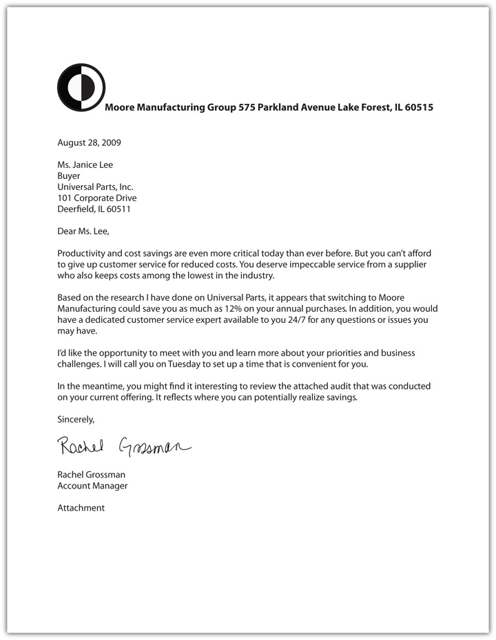
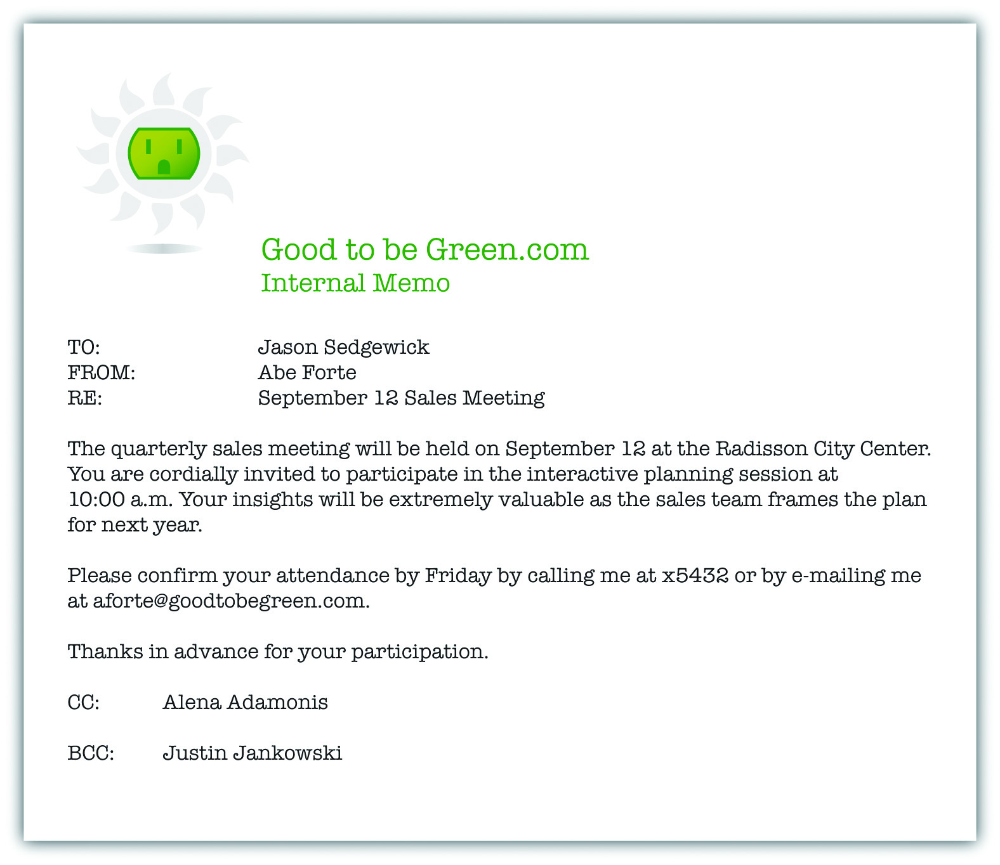
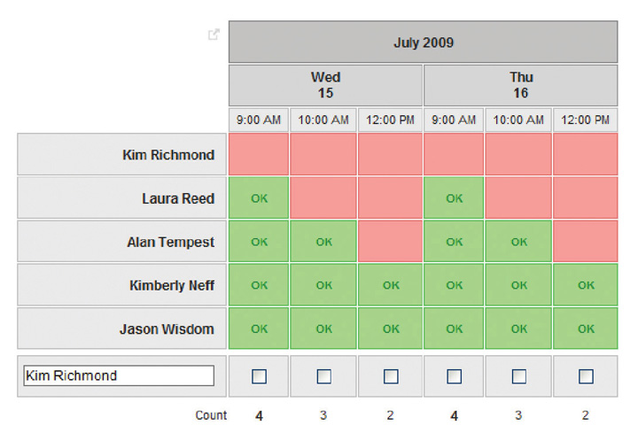

You probably learned about table manners, thank-you notes, and other forms of etiquette when you were younger. The way you conduct yourself says a lot about who you are in life and, by extension, in business. Although many companies have a casual dress code, don’t be quick to assume that protocol and established practices aren’t important. It would be easy to misinterpret lack of formality as lack of professionalism. Manners matter in selling, now more than ever.
How do you make a positive impression when you meet someone? What’s the best way to ask for her business card? When is it appropriate or expected to send a thank-you note? Who picks up the bill at a business lunch? It’s hard to know the “rules of the road,” especially in today’s casual, fast-paced selling environment. EtiquetteManners, customs, and protocols that are the norm in specific situation. can make the difference in how your customer perceives you and your personal brand.
Despite the use of electronic devices in business, formal written communication such as letters, memos, proposals, reports, and presentations are still major methods of communication in selling. These more official methods of communication reflect factual statements that you are making on behalf of the company. Here are some tips for writing business communications:
Tips for Writing a Business Letter
(click to see video)Etiquette makes all the difference in the quality of your communication.
Source: eHow.com
Figure 5.7 Business Letter Format
Figure 5.8 Company Memo Example
Although common sense should prevail in all business communications, here are some tips that will help make your conversations, meetings, and presentations more effective forms of communication:
In sales, time is money so conducting effective and efficient meetings is critical to your success.
Seven Tips to Make Your Meetings More EffectiveRenee Houston Zemanski, “Seven Ways to Make Your Meetings More Memorable,” Selling Power Meetings eNewsletter, July 7, 2009, http://www.sellingpower.com/content/newsletter/issue.php?pc=972 (accessed March 16, 2010).
http://www.sellingpower.com/content/newsletter/issue.php?pc=972
If you are setting up a meeting that involves several people and it’s difficult to agree on a meeting date and time, you can use Doodle.com to identify the best date and time to meet. You choose the options and e-mail a link to the participants; when people respond, you see the Doodle.com summary that indicates the best date and time for the meeting. Set up an account at http://doodle.com.
Figure 5.9 Sample Poll on Doodle.comKim Richmond, “Poll: Entrepreneurial Series,” Doodle, http://doodle.com/participation.html?pollId=g9cp9d7bn96yy34y (accessed July 17, 2009).
Business cards are a branding tool for your company and a way to stay in touch with your customers and other people in your network.Miss E, “The Art of Giving Business Cards,” 123etiquette.com, http://www.123etiquette.com/business-etiquette/business-card-etiquette (accessed July 17, 2009). In fact, giving out and requesting a business card is considered good etiquette.Ben Preston, “Good Business Etiquette Includes Giving Out Business Cards,” Businesstoolchest.com, http://www.businesstoolchest.com/articles/data/20060201225647.shtml (accessed July 17, 2009). Here are some tips to exchange business cards in a professional manner:
The Etiquette of Exchanging Business Cards
(click to see video)This is the right way to exchange cards.
Source: BNET
The purpose of a business breakfast, lunch, or dinner is to get to know someone and build a relationship. As you learned in Chapter 3 "The Power of Building Relationships: Putting Adaptive Selling to Work", to engage in business entertainment is considered part of the sales job description. Table manners are a form of nonverbal communication, and impolite etiquette can reverse all the effort you have put into a relationship. Business meals are so important that many companies use business lunches or dinners as part of the interview process. Whatever the situation, you want to be prepared with proper etiquette for the occasion.
There’s nothing more personal than a thank-you note. For the most part, you and your customers are very busy, which is why a thank-you note is even more appreciated. Whether it’s a handwritten note or an e-mail thank you, it will go a long way in building your relationship. It’s a personal touch that sets you apart. It’s never inappropriate to say thank you, but it may be inappropriate not to say thank you.
When to Say Thank You
Sending a thank-you note is always appropriate in business.
There are many reasons to send a business thank-you note; this video includes some ideas:
Why to Say Thank You
Here are ideas to keep you top of mind with a thank-you note.
Here are some tips for writing thank-you notes:
How to Say Thank You
This video includes some guidelines about what to include in a business thank-you note:
SimplySoles
Imagine getting a personalized handwritten thank-you note when you order a pair of shoes online. That’s what SimplySoles.com does for each customer. Founder Kassie Rempel feels so strongly about thanking customers for their business that every customer who purchases a pair of shoes receives one; each note even mentions the name of the shoe that was purchased.Justin Martin, “6 Companies Where Customers Come First,” CNNMoney.com, http://money.cnn.com/galleries/2007/fsb/0709/gallery.where_customers_come_first.fsb/5.html (accessed July 23, 2009).
The year was 1982, and the world was just beginning to realize the amazing potential of computer technology. John Naisbitt wrote a book called Megatrends: Ten New Directions Transforming Our Lives, where he coined the term “high tech, high touch,” which he defined as the contradictory state in which people are driven by technology yet long for human interaction.John Naisbitt, Megatrends: Ten New Directions Transforming Our Lives (New York: Grand Central Publishing, 1998). He wrote about how the United States has been transformed from being comfortable with technology to being intoxicated with technology, a state he calls the “Technologically Intoxicated Zone” in his 1999 book, High Tech/High Touch. You probably can’t imagine living without your cell phone or personal digital assistant (PDA), iPod, computer, or other electronic devices. In fact, it’s likely you can’t even remember what communication was like before the Internet.
Technology, with all of its efficiency and benefits, cannot, however, become a substitute for old-fashioned human efforts. “Technology makes tasks easier, but it does not make our lives easier,” according to July Shapiro in a recent article in Advertising Age.July Shapiro, “A Digital Myth: Technology Doesn’t Make Life Easier,” Advertising Age, May 11, 2009, http://adage.com/digitalnext/post?article_id=136533 (accessed May 12, 2009). Shapiro’s observation is true, especially as it relates to business; sometimes, the crush of technology takes precedence over business etiquette. However, people have begun to rethink the lack of personal interaction and its corresponding etiquette in the workplace. Yes, “there’s even an app for that”; a firm named Etiquette Avenue has recently launched an iPod app for business etiquette. The fact is, technology isn’t personal and can’t behave in the right way at the right time with your customer or on an interview; that’s completely up to you.CommercialsKid, “iPhone 3g Commercial ‘There’s an App for That,’” video, http://www.youtube.com/watch?v=szrsfeyLzyg (accessed July 16, 2009).,“Good Advice in Bad Times: New Etiquette Avenue iPhone App Puts Professional Protocol at Fingertips,” Business Wire, June 29, 2009.
Now, we’re seeing a bit of a reverse movement: Technology is so pervasive in selling that salespeople are actually pushing back on their managers and asking them for more face time and less gadget time. One of the best opportunities for sales managers and their salespeople to discuss business problems and build relationships with one another has traditionally been during “windshield time,” which is the time in the car driving between sales calls. “Sales reps report that the intrusion of technology has stolen this valuable time from reps and their principals [bosses],” according to a recent article in Agency Sales, because as soon as they get into the car to drive to the next call, the sales manager pulls out his BlackBerry. “If there’s one thing I could tell my principals [bosses] when they come see me in the field is to ditch the electronic communications and pay attention to me and our customers,” said one salesperson quoted in the article.“Reestablishing the Inside Connection: Open Communication with Inside Sales Strengthens the Rep Bond,” Agency Sales 39, no. 5: 38. It’s no surprise that there’s a need for business etiquette, especially as it relates to technology.
In a recent pitch to a potential client, a marketing executive in Manhattan thought it was strange that his potential customer was so engaged with his iPhone that he hardly looked up from it during the meeting. After ninety minutes, someone peeked over the customer’s shoulder and saw that he was playing a racing game on his iPhone. This was disappointing, but not shocking according to the marketing firm that was doing the presentation; they continued with their pitch because they wanted the business. Some are not as tolerant. Billionaire Tom Golisano, a power broker in New York politics, recently announced that he wants to have State Senate majority leader Malcolm A. Smith removed from office because Smith was focused on his BlackBerry during a budget meeting with him. Recently, in Dallas, Texas, a student lost his opportunity for an internship at a hedge fund when he checked his BlackBerry to check a fact during an interview and took an extra minute to check his text messages at the same time.Alex Williams, “At Meetings, It’s Mind Your Blackberry or Mind Your Manners,” New York Times, June 22, 2009, A1. It’s no surprise that BlackBerrys are also called “CrackBerrys.” According to Maggie Jackson, author of Distracted: The Erosion of Attention and the Coming Dark Age, we are living in “an institutionalized culture of interruption, where our time and attention is being fragmented by a never-ending stream of phone calls, e-mails, instant messages, text messages, and tweets.”Patrick Welsh, “Txting Away Ur Education,” USA Today, June 23, 2009, A11.
The need to be connected should not overwhelm respect for colleagues and customers. Although texting has become a national pastime, especially among teenagers, it’s important to know the appropriate etiquette for the use of handheld electronic devices when conducting a sales call.
First, it’s best to turn off your electronic devices before you enter every meeting. If you think you can’t live without checking your text messages, think about how you would feel if you went on a job interview and the person with whom you were meeting was checking his electronic device during your interview. Just because some people demonstrate bad behavior and check their electronic devices for messages during a meeting doesn’t make it appropriate. In fact, it will help you stand out as a good listener, and you will make your customer feel even more important when you focus exclusively on her, as shown in this video.
To Text or Not to Text
(click to see video)Learn about appropriate business etiquette.
Source: eHow.com
Sometimes, however, the use of technology is entirely necessary to conduct business when personal interaction is impossible. It’s important that verbal communication that is not face-to-face is effective and professional. Because you don’t have the benefit of using or seeing the receiver’s nonverbal communication, the challenges for effective and appropriate communication are even greater.
Here are some dos and don’ts of telephone etiquette:
Written communication has evolved to include multiple methods, all of which have appropriate places in selling. Notice the operative word here is appropriate. E-mail has become an accepted method of communication in most businesses, whereas text messages, instant messages, and social networks are commonplace for only some companies. That’s why etiquette is especially important when using any of these methods of communication, and you should take time to choose your method carefully. Letters, memos, proposals, and other written communication are considered formal, whether they are sent on paper or transmitted via e-mail. However, text messages, instant messages, and social networking are considered informal methods of communication and should be used only to communicate less formal information, such as a meeting time when schedules have been adjusted during a factory tour. Text and instant messages should never be used to communicate company policies, proposals, pricing, or other information that is important to conduct business with customers. It’s also worth noting that in all these methods your communication is permanent, so it’s a good idea to know the dos and don’ts of electronic communication.
Telephone and E-mail Etiquette at Work
(click to see video)Understand what makes a good impression on your customers.
Source: eHow.com
When the Customer Tweets
Social media give customers a voice like never before. When companies listen to customers, they can turn a bad situation into a good one; but if they don’t respond, customers speak out. For example, a dissatisfied Virgin America passenger posted a tweet on Twitter during a flight to Boston, thanks to the Wi-Fi service onboard. Virgin America monitors Twitter so closely that by the time the plane landed, a ground team met the customer at the gate to be sure his needs were met, and he left the airline with the memory of extraordinary service.Gerhard Gschwandtner, “Wow Your Customers with Twitter in Real Time,” Selling Power, http://sellingpower.typepad.com/gg/2009/07/wow-your-customers-with-twitter-in-real-time-.html (accessed July 23, 2009).
When is an iPod or other MP3 player or a handheld gaming device appropriate at work? Only when it is used for business purposes. “You’re isolating yourself,” says Dale Chapman Webb, founder of The Protocol Centre in Coral Gables, Florida. “You are sending a message that my music is more important than the work at hand.” If you feel the need to listen to your iPod or use handheld gaming devices at work, sales may not be the right profession for you.
You are at a business dinner with your boss and her husband in a very nice restaurant. Watch the following video and answer the following questions.
Source: BNET